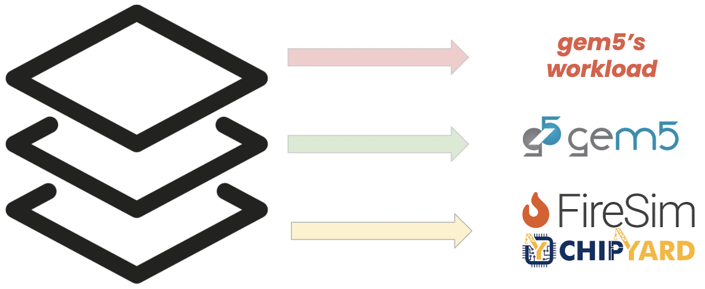

Cornell University
The computation in future datacenters will be distributed over a heterogenous array of processing elements, packaged modularly within a server’s boundaries. The inter- and intra-server data movement will bottleneck such a computing landscape. The vision of my research is to seamlessly integrate processor, memory, and network architecture through a co-design with operating systems, network software stack, and software libraries to minimize the data movement in future datacenters.
Mohammad Alian serves as an Assistant Professor in the ECE Department at Cornell University. He completed his Ph.D. and MS degrees from UIUC (2020) and UW-Madison (2015), respectively. His research team is focused on redefining the data-delivery hierarchy of future data centers. Mohammad's research has garnered recognition, including best paper nominations at HPCA 2017 and MICRO 2018, an IEEE Micro Top Picks Honorable Mention in 2017, and an NSF CAREER award. He serves as a co-Principal Investigator and Broadening Participation Champion for the SRC/DARPA JUMP 2.0 ACE Center for Evolvable Computing, with the primary objective of revolutionizing distributed computing for the next decade.
His research interests include distributed systems, warehouse-scale computing, and applications of data center technologies. He recently graduated with a Master's degree in Computer Science from the University of Kansas under the supervision of Professor Mohammad Alian.
He completed his undergraduate studies at the University of Kansas in May 2023 with a B.S. in Mathematics and Computer Science. He is a Ph.D. student in Electrical and Computer Science at Cornell University and also works as a research assistant in the Alian Research Group. His primary research interests lie in the fields of Computer Architecture and Accelerated Computing/HPC, with current research projects in Accelerated HPC Networking, as well as in the Modeling of Accelerated Systems. His language and platform of choice is Rust on Linux or MacOS, though he is also proficient in other programming languages such as C, Python, and shell scripting.
Mohammad's primary research interests revolve around computer architecture and machine learning. He has gained valuable experience in the field of machine vision, which involves developing algorithms and techniques to enable computers to understand and interpret visual data. He is driven by a desire to make significant contributions to academia and industry. He is eager to explore new avenues within computer architecture and machine learning, constantly seeking opportunities to expand his knowledge and expertise.
gem5 is a state-of-the-art software-based architectural simulator with wide spread use both in academia and industry. We set out to profile the performance of gem5 on different platforms and evaluate its performance. Our observation show that gem5 is 1.7x~3.02x faster on a MacBook Pro w/ M1 vs. Dell server w/ Intel Xeon Gold. Hence, we use FireSim to validate our hypothesis that gem5 is largely impacted by its cache sizes. Insightful stats like cache misses, branch mispredictions, cpu utilization etc. are collected by reading performance counters on these platforms. In this documentation, we describe the steps for running gem5 as a workload on FireSim.
XFM (Accelerated Software Defined Far Memory) is a near-memory accelerated SFM architecture, which exploits the coldness of data during SFM-initiated swap ins and outs. XFM leverages refresh cycles to seamlessly switch the access control of DRAM between the CPU and near-memory accelerator. XFM parallelizes near-memory accelerator accesses with row refreshes and removes the memory interference caused by SFM swap ins and outs
There has been significant focus on offloading upper- layer network protocols (ULPs) to accelerators located on CPUs and SmartNICs. However, restricting accelerator placement to these locations limits both the variety of ULPs that can be acceler- ated and the overall performance. In particular, it overlooks the opportunity to accelerate ULPs running atop a stateful transport protocol in the face of high cache contention. That is, at high network rates, the frequent DRAM accesses and SmartNIC-CPU synchronizations outweigh the benefits of hardware acceleration. This work introduces SmartDIMM, which unlocks the opportunity for accelerating ULPs running atop stateful transport protocols that primarily operate on data stored in DRAM. We prototyped SmartDIMM using Samsung’s AxDIMM and implemented end- to-end offloading of (de/en)cryption and (de)compression– two ULPs widely employed in datacenters. We then compared the performance of SmartDIMM with accelerator placements on the CPU, SmartNIC, and PCIe cards. Our results demonstrate that ULP offloading on SmartDIMM outperforms CPU, SmartNIC and PCIe-based offload configurations. In comparison to a server executing (de/en)cryption and (de)compression on the CPU, SmartDIMM achieves 21.0% to 10.28× higher requests per second and 36.3% to 88.9% lower memory bandwidth utilization.
In this work, we first demonstrate the limitations of gem5’s current network stack in achieving high network bandwidth. Then, we enable a userspace networking stack on gem5. We extend gem5’s NIC hardware model and device driver to support userspace device drivers running the DPDK framework. Additionally, we implement a network load generator hardware model in gem5 to generate various traffic patterns and perform per-packet timestamp and latency measurements without introducing packet loss. We develop a suite of six networkintensive benchmarks for stress testing the host network stack. These applications, based on DPDK, can run on both gem5 and real systems. Our experimental results show that enabling userspace networking improves gem5’s network bandwidth by 6.3× compared with the current Linux kernel software stack. We characterize the performance of DPDK benchmarks running on both a real system and gem5, and evaluate the sensitivity of the applications to various system and microarchitecture parameters. This work marks the first step in refactoring the networking subsystem in gem5.